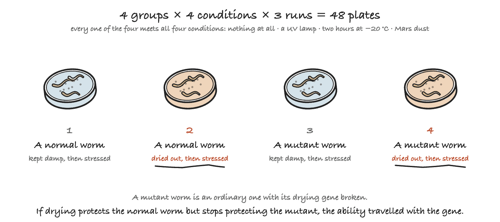

Stage 4: Testing Genes Enable Survival
Does a gene really bring its ability with it?
The 37-gene design rests on one sentence nobody has checked: put the gene in, get the ability; take the gene out, lose it. Every stage before this one is a laptop and a database. This is where that sentence meets a living animal.
The test is drying. A worm that has been dried out slowly should survive Mars-like stress better than a damp one, and if a particular gene is why, then breaking that gene should take the protection away with it. Not yet run.
Where this sits in the project
| Stage | What it answers | |
|---|---|---|
| Stage 1 | Searching Earth for MarsWorm | Is there already an organism that can do this? |
| Stage 2 | Designing MarsWorm | Nothing can, so borrow 37 real genes and design one |
| Stage 3 | Testing Biology Enriches Dirt | Can life from Earth turn Martian dirt into soil at all? |
| Stage 4 | Testing Genes Enable Survival | Does a gene really bring its ability with it? |
| Stage 5 | Building MarsWorm | 24 genes into one host, in six tested rounds |
| Stage 6 | Testing MarsWorm in Dirt | Put it in Martian dirt and find out whether anything grows |
The worm on the plate
Caenorhabditis elegans is a transparent soil roundworm one millimetre long, and the most studied animal in biology. It was the first to have its genome sequenced, and it is still the only one whose every single cell has been mapped and named.
It earns its place here for four practical reasons. A strain costs $10 and is harmless to people. It goes from egg to adult in three days, so an experiment fits inside a school term. Thousands of strains exist with one gene deliberately broken, ready to order. And it already does the thing being tested: its dauer larva survives drying out naturally.
It is not an earthworm. It does not burrow, cast, or build soil. It stands in for the survival half of the job only.
Four groups, four stresses
Two things are changed on purpose, and nothing else.
| Changed on purpose | The two levels |
|---|---|
| Drying | dried out slowly first, or kept damp |
| Strain | a normal worm, or one with the drying gene broken |
Those four combinations each meet four conditions: the three Mars-like stresses, and no stress at all.
| The condition | What it stands in for |
|---|---|
| Nothing at all | the control, and it is not optional |
| A UV lamp | radiation |
| Two hours at −20 °C | cold |
| Living on MGS-1 Mars dust | the Martian ground |
That is 2 × 2 × 4 = 16 conditions, about 50 worms in each, repeated on 3 separate runs, which comes to 48 plates.

Why there has to be a no-stress group. Drying a worm out is rough treatment all by itself. Without worms that are dried and then simply left alone, a drop in survival could mean the drying hurt them just as easily as the stress hurt them, and no amount of measuring would tell those apart.
A run is the replicate, not a plate. Every worm in one run came from the same batch of eggs on the same day, so two plates inside a run are not independent of each other. The analysis averages the plates within a run first, then compares the three runs. That is the difference between three honest numbers and forty-eight flattering ones.
What gets written down
Two numbers per plate: how many worms went on, and how many were alive a day later. That is the whole measurement.
Alive is decided by touch, not by looking. A living worm can sit perfectly still, so each one is nudged with a fine wire pick and scored dead only if it does not react. This cannot be done from a photograph, which is why the plates are counted by hand at a microscope.
Every plate lid is coded before scoring, so whoever
is counting cannot tell which group they are looking at. A person who
can read “dried, mutant” on the lid will count differently without
meaning to. A person holding a plate marked P17 cannot.
Photographs are taken too, and an AI counts them afterwards as a check
on the human numbers, never as the measurement itself.
Four days later each plate is looked at once more and scored 0, 1 or 2 for whether a next generation appeared. That is deliberately rough, but it catches something a survival count cannot: alive is not the same as well. A worm can crawl through a stress and be too damaged to breed, and counting it as a success would be wrong.
The full protocol, strains, materials and steps
The three strains, and what they cost
Everything here was checked against the CGC catalogue rather than assumed. The CGC is the Caenorhabditis Genetics Center, the NIH-funded stock centre that mails out C. elegans strains.
| What it is | Strain | Genotype | Price |
|---|---|---|---|
| Normal worm | N2 | wild isolate, Bristol | $10 |
| Drying gene 1 broken | VC225 | tps-1(ok373) X |
$10 |
| Drying gene 2 broken | RB760 | tps-2(ok526) II |
$10 |
Both knockouts are real deletion strains from the International C. elegans Gene Knockout Consortium, VC225 from the University of British Columbia and RB760 from the Oklahoma Medical Research Foundation. Neither is exotic or made to order. They sit in a freezer waiting for someone to ask.
With a $30 yearly CGC account and $10 for the E. coli the worms eat, the whole order is about $90 in the first year, and shipping is free. It takes 7 to 10 days to prepare and about two weeks to arrive. The worms come alive on small agar plates in a padded envelope, not frozen, so they have to be moved onto fresh plates soon after they land.
Why this gene, when Stage 2 ordered a different one
Stage 2 picks genes for Mars, not for convenience, so its two drying genes come from a plant and a yeast. The CGC stocks only C. elegans, so neither has a knockout to order. The gene tested here is the worm’s own counterpart.
| Stage 2 ordered | The counterpart in C. elegans | How close it is |
|---|---|---|
| Trehalose-phosphate synthase, from a yeast | tps-1 /
tps-2 |
a true ortholog: same protein family, same reaction |
| Dehydrin CAS31, from a plant | lea-1 |
a functional equivalent only, since dehydrins are a plant-only lineage |
tps-1/tps-2 is not “a gene like ours”, it
is the same enzyme doing the identical chemistry, and trehalose is
already the published reason C. elegans dauer larvae survive
drying. So there is groundwork to cite.
Three things that could stop this, named in advance
The CGC does not ship to residential addresses. This
is the real blocker for a school project and the thing to solve before
anything else. The order needs a school, university or company address
and a lab code, which the CGC assigns by emailing
cgc@umn.edu. A sponsoring teacher or lab partner is not
optional.
There is no double mutant in the catalogue.
Searching the whole collection returns tps-1(ok373) and
tps-2(ok526) separately and nothing carrying both. If the
two genes cover for each other, breaking only one may show nothing at
all, and getting a double would mean crossing the two strains by hand.
That is ordinary C. elegans work, but it is weeks more of it.
Check for that cover before Day 1, not after.
MGS-1 simulant comes from one supplier. Buy it from Space Resource Technologies or a laboratory supplier; Fisher lists 5 kg at about $307. Older references point at UCF’s Exolith Lab, which no longer produces it. Only a small amount is needed here, but order it early.
Prices and availability checked at cgc.umn.edu, fees and shipping and how to order.
A fallback, decided now rather than in a panic. If no mutant arrives in time, run dried against damp on normal worms only. That still answers whether drying protects, and with no mutant to compare against, the gene question comes back “nothing to compare” rather than a guess.
Materials
| What to get | Notes |
|---|---|
| C. elegans N2, VC225 and RB760 | from the CGC, $10 each |
| E. coli OP50 | what the worms eat |
| NGM agar plates | recipe from any standard C. elegans protocol, or buy them premade |
| Stereo microscope, 20 to 40×, with a phone-photo adapter | the one real piece of equipment here, about $180 to $320. Borrow one from a school science department if at all possible |
| Platinum worm pick | for the touch test that decides alive from dead. A fine eyelash glued to a toothpick is the classic cheap substitute |
| UV-C lamp | switched by the Pico W through a relay |
| A −20 °C freezer | for the cold stress |
| Small sealed humidity chamber and saturated salt solution | this is what does the drying |
| MGS-1 Mars regolith simulant | a small amount, for the dust condition |
| SHT31 sensor and Pico W | the stress chamber, wired and logging before Day 1 |
Step by step
- Synchronise the worms. Bleach adult worms to collect eggs, so every worm in a run is the same age. This is standard C. elegans technique; look up “egg prep synchronization”
- Split into dried and damp. The dried group goes into the Pico W chamber, and humidity ramps down on a logged schedule over several hours
- Split each of those across the conditions. UV-C at three graded doses, chamber-controlled and logged; the freezer for a fixed time; plated onto MGS-1-supplemented NGM; and left alone
- Recover at room temperature for 24 hours
- Count the survivors at the microscope, touching each worm to see if it reacts, on plates coded so you cannot tell which group you are scoring. Photograph them so the AI counter can check the numbers afterwards
- Four days later, look at each plate once more and score 0, 1 or 2 for whether a next generation appeared
Rules that keep it fair
| The rule | What goes wrong without it |
|---|---|
| Every plate coded before counting | whoever is at the microscope counts differently when they know which group they are holding |
| Score by touch, never by “it looked still” | a live worm can sit perfectly motionless, and gets recorded as dead |
| Normal worms run alongside every mutant batch, same day, same plate batch | a difference between strains could just be a difference between weeks |
| Pilot the freeze time and UV dose before the real runs | a dose that kills everybody, or nobody, tells you nothing either way |
| Log every chamber run’s real humidity and temperature curve | without it there is no proof the two groups were treated identically except for the drying |
Write down only what you can read off an instrument: a count in, a count out, a score of 0, 1 or 2. Every column is explained in the codebook.
The three questions
| The question | What it compares |
|---|---|
| Does drying help a worm survive? | normal worms, dried against damp, under the three stresses |
| Is the gene the reason? | what drying was worth to a normal worm, against what it was worth to a broken-gene worm |
| Is the drying safe on its own? | dried against damp, with no stress at all |
The middle question is what this stage exists for. If drying protects because of this gene, then breaking the gene should take the protection away with it. Both halves of that comparison come from the same run, so a warm room or a lively batch of eggs cannot fake it.
How a verdict is decided
Three runs are done, and the dried worms look tougher. Did drying really help?
The same two rules as Stage 3, written down before any counting, so nobody could invent a rule that made the answer come out nicely.
| The rule | The question it asks |
|---|---|
| A clean win. The worst dried run still beat the best damp run | was it every run, or one lucky day? |
| Big enough. The gap is at least 10 percentage points | was the difference big enough to matter? |
Ten points is about five worms on a plate of fifty. Below that, three runs cannot tell a real effect from a good day. Pass both rules and drying really helped. Miss the first and the runs are tangled together, so one good day might be doing all the work. Miss the second and the help is real but too small to notice. Miss either one and the answer is no.
Practice runs on made-up data
Weeks of worm work is a long time to find out the code is broken. So invented but realistic counts are written into the same sheets a person fills in by hand, including runs where the experiment fails, and the report is run against each one to see whether it says something true.
| Practice run | What it pretends happened | Does drying help? | Is the gene why? | Is drying safe alone? |
|---|---|---|---|---|
gene-is-the-reason |
the result the design is hoping for | ✅ yes | ✅ yes | ✅ yes |
drying-helps-anyway |
drying protects, but something else does it | ✅ yes | ❌ no | ✅ yes |
drying-does-nothing |
drying made no difference at all | ❌ no | n/a | ✅ yes |
Every one of these is titled Dry run, so nobody can mistake one for a finding. They are not evidence of anything. They are proof that the report tells the truth before there is any truth to tell.
drying-does-nothing is the important one. It checks that
the report says no without softening it, and that it
knows when a question has stopped making sense: if drying never
protected the worms, then “is the gene the reason?” has nothing
to be the reason for, so the report prints
“nothing to compare” instead of inventing an answer.
That is the n/a cell, and it is a feature.
What this stage does not test
Stage 2’s design has 13 survival jobs. This experiment reaches one of them, “make the sugar that protects it while dry”. Two walls make that unavoidable.
7 of the 13 have nothing to knock out. Both perchlorate jobs, both radiation jobs, both cold jobs and making energy without air have no relative in C. elegans at all, because no animal does them.
One experiment, one variable. This is already 48 plates. A second gene doubles it, and half an experiment proves less than a whole one.
And the stresses are proxies, imperfect ones. Better to say so first than be asked.
| The stress | Stands in for | The honest gap |
|---|---|---|
| A UV-C lamp | radiation | UV-C is not ionising radiation, and Mars’s real hazard is cosmic rays |
| A −20 °C freezer | cold | Mars averages about −60 °C |
| MGS-1 dust | the Martian ground | MGS-1 contains no perchlorate, so the actual poison is absent |
That last row is the one to volunteer. This tests survival on Martian dust minus its poison, which is a much narrower claim than surviving Martian soil.
So why do one job properly instead of thirteen badly? Because this stage is not checking the design, it is checking the method. All 37 genes rest on the same sentence, put the gene in and get the ability, and one clean result is evidence about that sentence. Thirteen shallow tests would be evidence about nothing.
What counts as success
Dried normal worms beat damp ones by more than ten points with no
overlap between the runs, and that advantage shrinks or
disappears in the worms whose tps-1/tps-2 is
broken. The first half says drying protects. The second half says this
gene is why.
A failure is still a result. If drying helps both strains equally, the honest finding is that drying protects and this gene is not the reason. That matters just as much, and the report prints it without being asked twice.